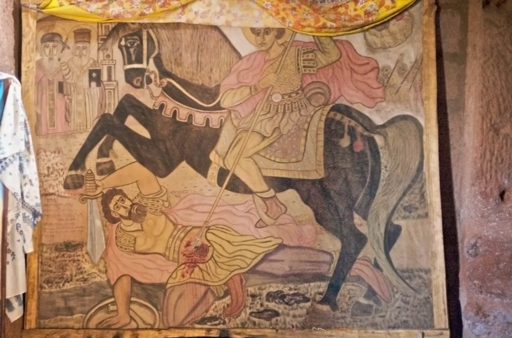

El último emperador pagano. Juliano el Apóstata y la guerra contra el cristianismo. H. C. Teitler. Traducción en español de Eduardo Alemán. Fragmento.
Introducción
Flavio Claudio Juliano, más conocido como Juliano el Apóstata, murió en la noche del 26 al 27 de junio de 363 d.C. Había gobernado el Imperio Romano durante menos de veinte meses cuando fue herido cerca de la moderna Bagdad por una lanza de caballería que le atravesó las costillas y se alojó en la parte inferior del hígado. El joven emperador, que había nacido en Constantinopla en 331 ó 332, murió pocas horas después.1
Es prácticamente seguro que el arma mortal había sido lanzada por un enemigo, un soldado de caballería del ejército del rey persa Sapor II, contra quien Juliano había iniciado una guerra a principios de 363. Pero no todos lo creían. Según el historiador Amiano Marcelino, que participó en la expedición persa de Juliano como oficial del ejército, había rumores de que la lanza procedía de las propias filas del emperador. Otro contemporáneo, Libanio, profesor de retórica y, como Amiano, simpatizante y admirador de Juliano, va un paso más allá y sugiere que un cristiano fue el responsable de la muerte del emperador. Aunque probablemente no sea cierta, esta teoría no es descabellada: Juliano era odiado por casi todos sus súbditos cristianos, a quienes llamaba desdeñosamente “galileos”. Estos “galileos” no podían soportar el hecho de que el emperador, a pesar de su educación cristiana, intentó insuflar nueva vida a los cultos de los antiguos dioses paganos desde su ascenso al trono en el año 361. Temían que el Apóstata pusiera fin al el progreso del cristianismo, que, después de la conversión de Constantino, el tío de Juliano, a principios del siglo IV, había ido ganando apoyo de manera constante.2
Corrían más rumores sobre la muerte de Juliano. La “leyenda de la daga” del pagano Libanio fue adoptada con entusiasmo por el cristiano Sozómeno, aunque este historiador de la iglesia, que vivió en el siglo V, le dio un giro a la historia: Sozómeno está lleno de elogios para el hombre que arrojó la lanza. No lo llama traidor ni asesino cobarde, sino valiente tiranicida. El historiador de la iglesia Sócrates, uno de los predecesores de Sozómeno, cita a alguien del círculo íntimo de Juliano que había escrito un poema épico sobre el emperador en el que Juliano era asesinado por un demonio. Otros no hablan de demonios, sino de ángeles o santos: en varios relieves y pinturas, los artistas retratan a Juliano mientras es apuñalado por San Mercurio, asemejándose al dragón asesinado por San Miguel o San Jorge (Figura 1).

Figura 1. San Mercurio matando al rey Oulyanos/Oleonus/Juliano. Pintura en la iglesia rupestre de Bet Mercurius en Lalibela, Etiopía, realizada en 1932 por Hayla Maryarm Taddasa, con la ayuda de Zacharias (Martin 2014a, 327). (Línea de crédito: © Fotografía de A. Davey, Wikimedia Commons).
Algunos cristianos alegaron que Juliano exclamó en su lecho de muerte: “Has vencido, galileo”, mientras recogía la sangre que brotaba de su herida y la arrojaba al cielo. Amiano Marcelino y Libanio, por el contrario, ambos paganos, dejaron morir a su idolatrado emperador al estilo del famoso filósofo ateniense Sócrates, hablando en su lecho de muerte con amigos sobre la inmortalidad del alma.3
Los relatos sobre la vida de Juliano difieren tan marcadamente como los de su muerte. Si podemos creerle al padre de la iglesia capadocia, Gregorio Nacianceno, era obvio para cualquiera que viera a Juliano que no servía para nada. Él, Gregory, en cualquier caso, se había dado cuenta de que Juliano era un monstruo en el momento en que lo vio; eso había sido en Atenas cuando ambos eran estudiantes: el cuello hinchado de Juliano, sus hombros temblorosos, esa mirada nerviosa en sus ojos, esa mirada nerviosa e incontrolada risas, todo esto (y aún más; la descripción de Gregory es más larga que mi paráfrasis) fue elaborado para que cualquiera lo reconociera inmediatamente por lo que era: un demonio. El retrato que dibuja Amiano Marcelino es más amable: «Era de mediana estatura, su cabello era liso como si lo hubieran peinado y llevaba una barba erizada y recortada en punta. Tenía unos ojos bellos y brillantes, signo de una inteligencia vivaz, cejas bien marcadas, nariz recta y una boca bastante grande con el labio inferior colgante. Su cuello era grueso y algo encorvado, sus hombros grandes y anchos. Tenía una constitución perfecta de pies a cabeza, lo que lo hacía fuerte y un buen corredor”.4
La imagen que Gregorio y Amiano presentaron de la apariencia de Juliano estaba determinada por su visión de su yo interior. Gregory no era amigo de Juliano. En dos invectivas, el obispo cristiano destroza al emperador y critica todo lo que había hecho o anhelado hacer. No es de extrañar que su descripción de la apariencia de Juliano no sea muy halagadora y probablemente un poco caricaturesca. Sin embargo, como es de esperarse de una caricatura, algunas partes de su retrato son reconocibles. Compárese, por ejemplo, el cuello regordete de algunas monedas del Apóstata (de quien también han sobrevivido estatuas y bustos). La visión de Amiano sobre el emperador era más equilibrada. El historiador convirtió a Juliano en la figura central de los libros 15 a 25 de su Res Gestae (Historia) y más de una vez expresa su admiración por él, sin disimular sus defectos. Él mismo vio en Juliano la personificación de las cuatro virtudes cardinales, pero Amiano también relata que otros tildaron a Juliano de “topo parlanchín”, “más una cabra que un hombre”, un “simio vestido de púrpura” y Amiano desaprobaba totalmente el edicto escolar de Juliano, el cual prohibía a los profesores cristianos de retórica y literatura ejercer su profesión a menos que renunciaran a su fe. “Esta medida es cruel y debería ser sepultada bajo el silencio eterno”, fue su aplastante comentario.5
Poco después de la temprana muerte de Juliano, su ley escolar fue revocada, o al menos modificada. Sus otros intentos de restaurar los cultos a los dioses y salvar lo que a sus ojos era la verdadera civilización helénica fracasaron igualmente. El corto período de este emperador en el cargo fue sólo una pequeña nube que pronto pasaría, según el obispo de Alejandría Atanasio. Pero la indignación engendrada por el reinado de Juliano tuvo eco en el futuro. Al expresar su resentimiento, la gente a menudo jugaba con los hechos. Juliano fue acusado de crímenes que simplemente no pudo haber cometido. Por ejemplo, presuntamente torturó y mató a cristianos en Roma, aunque nunca en su vida visitó la ciudad eterna. Si bien la realidad fue que luchó contra los persas en Mesopotamia, supuestamente ordenó en la Galia la ejecución de un tal Elofio, quien, tras su decapitación, caminó muchos kilómetros con la cabeza entre las manos hasta lo que sería su lugar de descanso final. También se informa que Juliano fue nombrado Papa por Satanás, después de lo cual intentó en secreto socavar la Iglesia Católica. Expuesto y depuesto por sus cardenales, continuó sus acciones destructivas guiadas por Satán, hasta perecer por la espada del Cardenal Mercurio. No es necesario decir que esto también es pura ficción.6
Hay pocos emperadores romanos cuya vida y obra están tan densamente enterradas bajo la creación de leyendas como la de Juliano, el emperador que, en palabras de uno de sus biógrafos modernos, “es sin lugar a dudas una de las figuras más enigmáticas y convincentes de la antigüedad”. En este libro, que se centra en un aspecto del reinado de Juliano, presto atención tanto a los hechos como a la ficción. Intento responder a la pregunta de si bajo Juliano los cristianos fueron perseguidos y, de ser así, en qué escala. Aquí hay que distinguir entre las persecuciones iniciadas por el propio Juliano y las que fueron perpetradas en su nombre pero sin su consentimiento o conocimiento. También me interesa el impacto que tuvieron las - supuestas - persecuciones bajo Juliano en las generaciones posteriores, que, si creemos en la Passio Pimenii (‘Sufrimientos de Pimenio’), costaron miles y miles de vidas en todo el Imperio Romano.7
He escrito este libro utilizando varias fuentes, en primer lugar las propias obras de Juliano. Ningún emperador romano legó a la posteridad más obras escritas que él. Especialmente sus cartas son una fuente invaluable de información. Estos textos, escritos en la lengua materna de Juliano, el griego (aunque, para citar a Amiano, “conocía el latín lo suficientemente bien como para poder hablar en él”), se complementan con monedas, leyes e inscripciones en piedra. Amiano Marcelino demuestra ser una guía bastante confiable, y las cartas y discursos de Libanio, un pagano como Amiano, nos brindan muchos detalles que de otra manera no hubiéramos conocido. 8
Casi sin excepción, los escritores cristianos tenían una disposición desfavorable hacia el apóstata. Esto se aplica tanto a Gregorio Nacianceno como a su contemporáneo más joven Juan Crisóstomo, que llegó a ser obispo de Constantinopla y cuya obra es vasta. También es cierto para los historiadores de la iglesia Filostorgio, Sócrates, Sozómeno, Teodoreto y Rufino, todos los cuales siguieron los pasos de Eusebio de Cesarea, contemporáneo de Constantino el Grande, el primer autor de una historia de la iglesia. Y se aplica, a fortiori, a los escritores de passiones, que nos informan sobre los mártires que murieron, o supuestamente murieron, durante el reinado de Juliano.9
Hay que examinar constantemente hasta qué punto son fiables todos estos autores como fuentes históricas, en particular los escritores de las passiones. No es una tarea fácil, pero sí una condición previa indispensable para la investigación histórica. Implícita o explícitamente planteo a lo largo de este libro la cuestión de la confiabilidad de las fuentes. Edward Gibbon y otros pueden considerar a Amiano Marcelino como un “guía preciso y fiel”. Esto no significa que fuera infalible o imparcial. Por el contrario, casi todos los autores cristianos que escribieron sobre Juliano fueron hostiles hacia él, pero eso no significa que su información deba ser descartada a priori.10